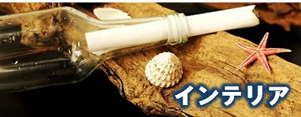

<aside class="sidebar">
  <!-- 新着情報 -->
  <div class="sidebar-section" style="padding: 20px; background-color: #fff; border: 1px solid #ccc; border-radius: 8px; box-shadow: 0 2px 6px rgba(0,0,0,0.1);">
    <h3 style="margin-top: 0; margin-bottom: 15px; font-size: 1.2em; color: #2e7d32; border-bottom: 2px solid #2e7d32; padding-bottom: 5px;">新着情報</h3>
    
    <ul style="list-style: none; padding-left: 0; margin: 0;">
      <li style="margin-bottom: 12px;">
        <div style="font-size: 0.85em; color: #888;">2025.06.25</div>
        <div style="font-size: 1em; color: #333;">新商品ページを追加しました</div>
      </li>
      <li style="margin-bottom: 12px;">
        <div style="font-size: 0.85em; color: #888;">2025.06.10</div>
        <div style="font-size: 1em; color: #333;">トップページをリニューアルしました</div>
      </li>
    </ul>

  </div>

 <!-- 用途別商品 -->
  <div class="sidebar-section" style="padding: 20px; background-color: #fff; border: 1px solid #ccc; border-radius: 8px; box-shadow: 0 2px 6px rgba(0,0,0,0.1);">
    <h3 style="margin-top: 0; margin-bottom: 15px; font-size: 1.2em; color: #2e7d32; border-bottom: 2px solid #2e7d32; padding-bottom: 5px;">用途別商品</h3>

    <a href="item_aquarium.html" style="display: block; margin-bottom: 12px;">
      
    </a>
    <a href="item_gardening.html" style="display: block; margin-bottom: 12px;">
      
    </a>
    <a href="item_pet.html" style="display: block; margin-bottom: 12px;">
      
    </a>
    <a href="item_interior.html" style="display: block;">
      
    </a>
  </div>

</aside>

<style>
  /* 画像バナーのホバー時の半透明効果 */
  .sidebar-section a img:hover {
    opacity: 0.7;
  }
</style>
